1.Hemalkasa
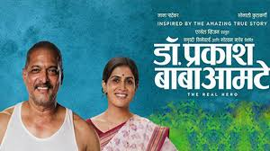
Biopic on Dr. Prakash Amte, the selfless doctor and social worker who devoted his life towards the development and upliftment of the tribal people in the forests of western Maharashtra
Director:Samrouddhi Porey
Genre:Biography,History,Drama
ImDb Rating:8.7
2.Natsamrat
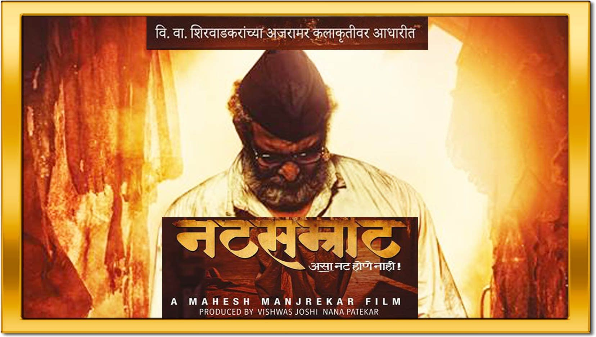
After he retires, an aging theatre actor and his wife begin to feel unwanted by their children.
Director:Mahesh Manjrekar
Genre:Family, Drama
ImDb Rating:9.1
3.Sairat
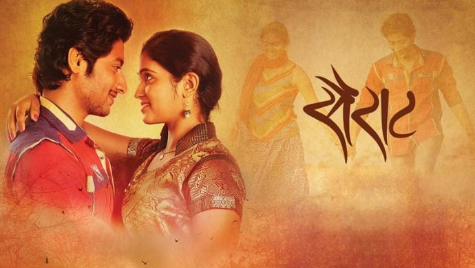
In interior Maharashtra, a fisherman's son and a local politician's daughter fall in love against the restrictions of caste hierarchy.
Director: Nagraj Manjule
Genre:Drama,Romance
ImDb Rating:8.3
4.Premam
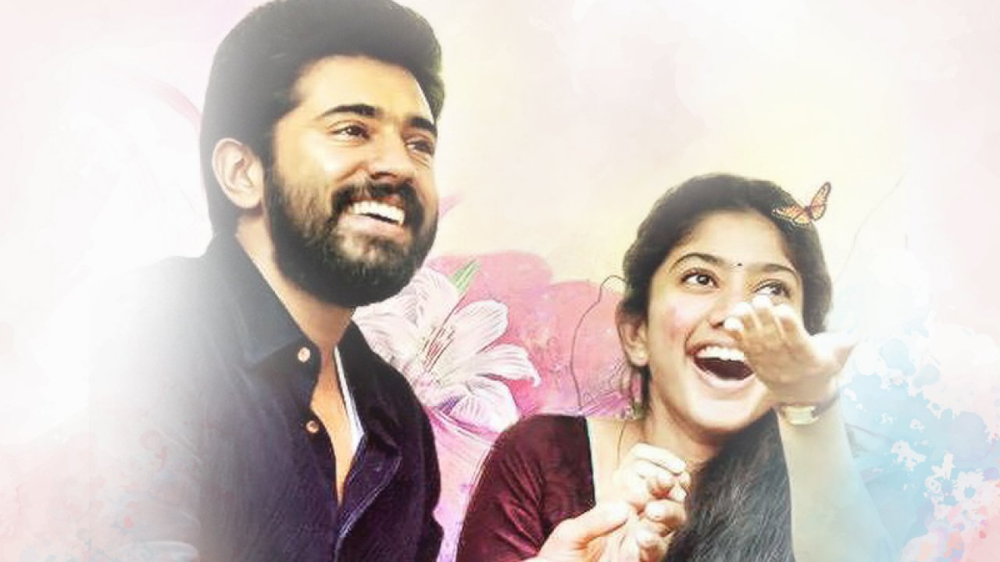
A young man has three opportunities to find love. Will the third time be the charm?
Director:Alphonse Puthren
Genre:Drama,Comedy
ImDb Rating:8.3
5. Banglore Days
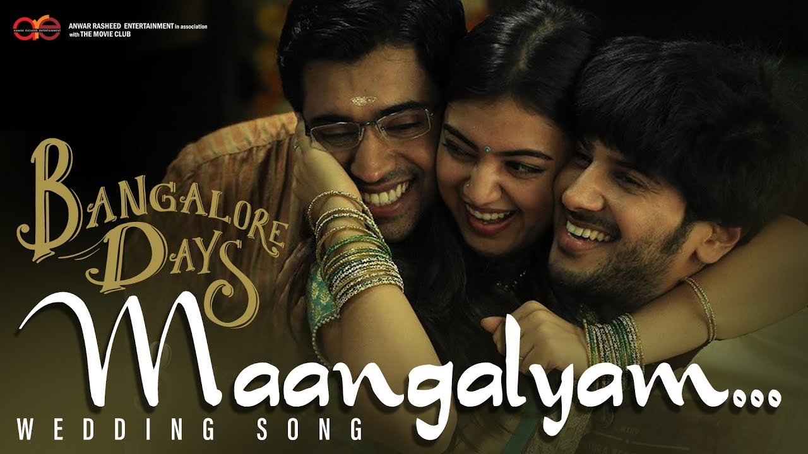
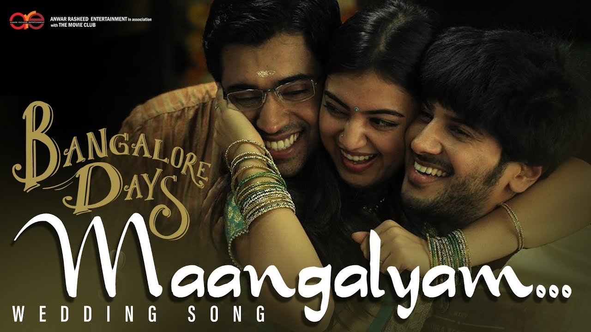
Three cousins set out to fulfill their Bangalore dreams.
Director:Anjali Menon
Genre:Drama,Comedy,Romance
ImDb Rating:8.3
6.Court
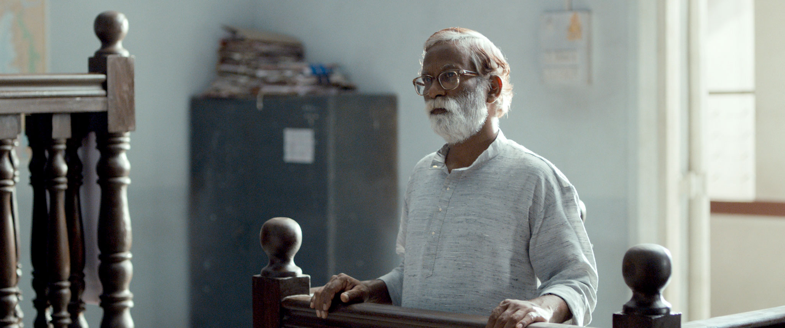
When an aging activist is arrested, the lives of the accused, the lawyers, and the judge intertwine to reveal bigotry that underscores the judicial system.
Director: Chaitnaya Tamhane
Genre:Drama
ImDb Rating:7.7
7.Katyar Kaljat Ghusali
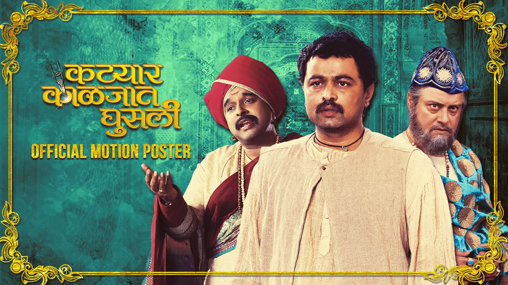
A clash of two musical families, where in the end, music is the winner. When greed takes the front seat, manipulations shift gears.
Director:Subodh Bhave
Genre:Musical, Drama
ImDb Rating:8.8
8.Mee Shivajiraje Bhosale Boltoy
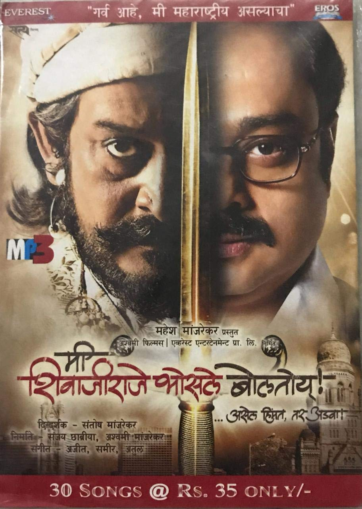
Dinkar Maruti Bhosle, a common Marathi man with an identity crisis ends up being the Crusader against threats to his existance & identity as a 'Marathi Maanus'. In his battle against all odds & evils, he is assisted by Chattrapati Shivaji Maharaj
Director:Santosh Manjrekar
Genre:Drama
ImDb Rating:7.9
9.Mumbai Pune Mumbai
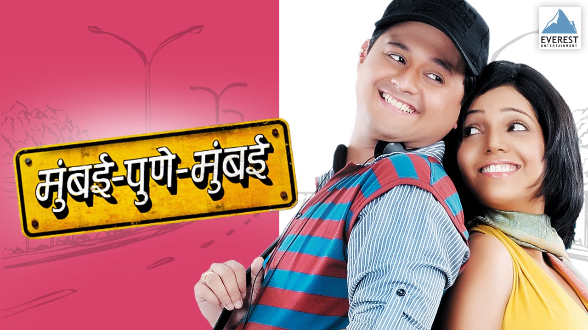
A girl from Mumbai who comes to Pune to meet a prospective groom, with the idea of rejecting him, ends up spending the day with a complete stranger.
Director:Satish Rajwade
Genre:Drama,Romance
ImDb Rating:8
10.Shwaas
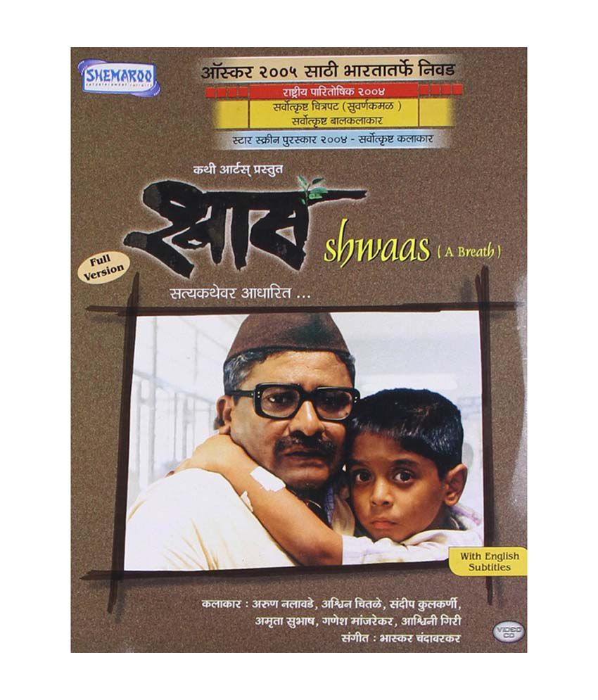
This story is about how an old man tried to show his grandson the preciousness and beauty of life in a no win situation such as cancer. It is about keeping a positive attitude towards life.
Director:Sandeep Sawant
Genre:Crime,Drama,Mystery
ImDb Rating:8.3